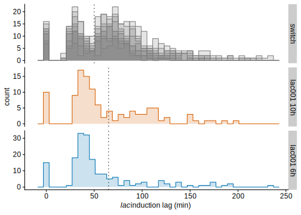
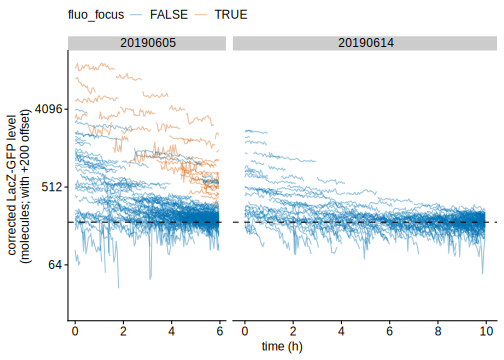
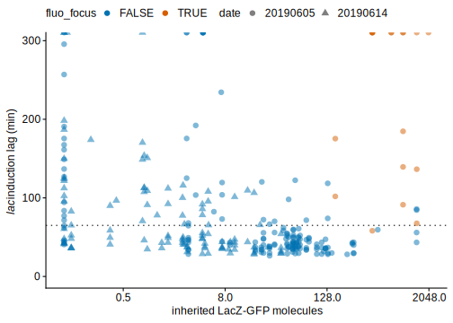
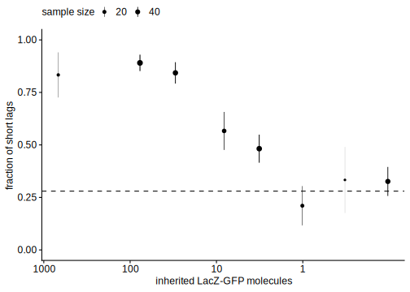

In order to assess how the sensitivity threshold (number of Lac proteins required to sense lactose) depends on the concentration of external lactose, we performed experiment at lower lactose concentration. Note that since we anticipate slower growth on lactose (and hence higher sensitivity to phototoxicity) and/or longer lags, we reduced the fluorescence excitation intensity 5-fold and the acquisition frequency 2-fold.
We checked that fluorescence time series don’t feature abherent patterns despite the corrections required by the change of illumination. Nonetheless, we note that modifying the illumination frequency (and intensity?) changes the photobleaching which is complicated to correct for on total fluorescence (only instantaneous production rates could be corrected in a straightforward way but we don’t use them in our analysis).
First thing to note is that short lags are spread over a slightly wider window, i.e. they can last up to 65 min.
# Let's look at the lags
mycells_switching %>% ungroup %>%
filter(!date %in% discarded_dates) %>%
filter(switch_idx==1) %>%
filter(str_detect(condition, '^switch_[0-9]+h$') | str_detect(condition, 'switch_lac001')) %>%
mutate(date2=date, date2=ifelse(str_detect(condition, '^switch_[0-9]+h$') & !str_detect(condition, 'switch_lac001'), NA, date2)) %>%
mutate(condition=ifelse(str_detect(condition, '^switch_[0-9]+h$') & !str_detect(condition, 'switch_lac001'), 'switch', as.character(condition)),
condition=fct_rev(condition)) %>%
mutate(lag=lag_200,
lag=ifelse(!is.infinite(lag), lag, max(lag[is.finite(lag)])+60),
lag=ifelse(is.na(lag), -1, lag)) %>%
ggplot(aes(lag/60)) +
facet_grid(condition~., scales='free_y', labeller=as_labeller(rename_conds)) +
geom_vline(aes(xintercept=time), lty="dotted",
data=tibble(condition=c("switch_lac001_6h", "switch_lac001_10h", "switch"), time=c(65, 65, 50))) +
# geom_freqpoly(aes(col=factor(date2), fill=factor(date2), group=date), alpha=.8, binwidth=6) +
geom_histogram(aes(fill=factor(date2), group=date), alpha=.2, position='identity', binwidth=6) +
geom_step_hist(aes(col=factor(date2), group=date), position='identity', binwidth=6) +
xlim(-10, 240) +
guides(col='none', fill='none') +
labs(x=lac_lags_label) 
Let’s extract the ancestry lineage of cells for which a lag can be measured, and compute the inherited LacZ-GFP from the GFP level at the start of the glucose phase.
# LOOK AT ANCESTORS
mycells_switchingLow_memory <- mycells_switching %>% ungroup() %>%
filter(str_detect(condition, 'switch_lac001')) %>%
select(date, pos, gl, ugen, genealogy) %>%
group_by(date, pos, gl, ugen, genealogy) %>%
# do(parents=get_all_parents_cid(.$genealogy))
do(tibble(parent=c(get_all_parents_cid(.$genealogy), .$genealogy))) %>%
inner_join(
myframes %>% ungroup() %>%
filter(str_detect(condition, 'switch_lac001')) %>%
filter(m_cycle==1, medium=='glucose') %>%
select(date, pos, gl, parent=genealogy, time_sec, parent_gfp=gfp_nb) %>%
mutate(parent=str_replace(parent, ":", "")),
by=c("date", "pos", "gl", "parent") ) %>%
mutate(divs_to_switch = str_length(genealogy) - str_length(parent) - 1) %>%
nest(lineage=c('parent', 'time_sec', 'parent_gfp', 'divs_to_switch')) %>%
left_join(
mycells_switching %>% ungroup() %>%
filter(str_detect(condition, 'switch_lac001')),
by=c("date", "pos", "gl", "ugen", "genealogy") ) %>%
ungroup() %>%
mutate(gfp_start = map_dbl(lineage, ~ filter(., time_sec < 10*60) %>% pull(parent_gfp) %>% mean() ),
# compute inherited LacZ-GFP as the average gfp in the first 2 hours (corrected for bleaching) divived by the dilution factor due to the bnumber of division since then (assumes no production since no IPTG and no degradation)
# NB: it is critical to get the GFP absolute right here and we introduce a +60 offset to correct for day-today variation in fluo baseline (cf the analysis of autofluorescence in cells with long lags)
gfp_inherit = map_dbl(lineage, function(.df){ # browser()
.df %>% mutate(divs_since_par = max(divs_to_switch)-divs_to_switch,
gfp_ini = (parent_gfp+60) * exp(5e-5*time_sec) * 2^divs_since_par) %>%
filter(time_sec<2*3600) %>%
# ggplot() + geom_path(aes(time_sec, gfp_ini, group=parent)) + expand_limits(y=0) + scale_x_hours()
pull(gfp_ini) %>% mean() %>%
{. / 2^max(.df$divs_to_switch)}
# return(0)
}),
fluo_focus = ifelse(
(date == '20190605' & pos == 0 & gl %in% c(2, 9)) |
(date == '20190605' & pos == 1 & gl %in% c(19)) |
(date == '20190605' & pos == 2 & gl %in% c(12, 13)) |
(date == '20190605' & pos == 3 & gl %in% c(2)) |
(date == '20190614' & pos == 1 & gl %in% c(1, 17)),
TRUE, FALSE),
)
# mycells_switchingLow_memory %>%
# group_by(date, pos, gl) %>%
# summarise(n=n(), all=all(fluo_focus), any=any(!fluo_focus)) %>%
# ungroup() %>%
# summarise(n=n(), fluo_focus=sum(all))
# mycells_switchingLow_memory %>% ungroup() %>%
# filter(gfp_start > 2500 | fluo_focus) %>%
# select(date, pos, gl, genealogy, gfp_start, fluo_focus) %>% print(n=Inf)
# mycells_switchingLow_memory %>%
# mutate(lag_200=ifelse(lag_200/60 > 300, Inf, lag_200),
# gfp_inherit=ifelse(gfp_inherit<1e-4, 1e-4, gfp_inherit) ) %>%
# # pull(gfp_inherit) %>% is.finite() %>% all()
# ggplot(aes(gfp_inherit)) + stat_ecdf() + scale_x_log10()
# ggplot(aes(logl_time_slope_before, col=factor(date), lty=gfp_inherit>30)) +
# geom_freqpoly(binwidth=1e-5) +
# coord_cartesian(xlim=c(0, 3e-4)) +
# NULLHere are all lineages analysed in low lactose:
(myplots[['lowLac_gfp_lineages']] <- mycells_switchingLow_memory %>% ungroup() %>%
# filter(gfp_start < 2500) %>%
unnest(lineage) %>%
select(date, pos, gl, fluo_focus, parent, time_sec, parent_gfp) %>%
distinct() %>%
ggplot(aes(time_sec, (parent_gfp+60) + 200)) +
facet_grid(~date, scale='free_x', space='free_x') +
geom_path(aes(group=interaction(pos, gl, parent), col=fluo_focus), alpha=0.4) +
geom_hline(yintercept=200, lty='dashed') +
scale_x_hours(2) +
scale_y_continuous(trans='log2', limits=c(20, NA)) +
# scale_y_continuous(limits=c(NA, 400)) +
# scale_colour_periodic(guide='none') +
labs(y = "corrected LacZ-GFP level\n(molecules; with +200 offset)" ) +
theme(legend.position='top') +
NULL)
Let’s look at the induction lag as a function of the inherited LacZ-GFP.
Data analysis revealed that virtually all cells descended from a mother cell with a LacZ-GFP focus (visible in fluorescence) have long lags despite their high LacZ-GFP level measurable at the switch. The reason for this remains unclear but we discard them from current analysis.
(myplots[['lowLac_lags_inherited_gfp']] <- mycells_switchingLow_memory %>%
ungroup() %>%
mutate(lag_200=ifelse(lag_200/60 > 300, Inf, lag_200),
gfp_inherit=ifelse(gfp_inherit<.1, .1, gfp_inherit) ) %>%
ggplot(aes(gfp_inherit, lag_200/60, shape=factor(date), col=fluo_focus)) +
geom_hline(yintercept=65, lty='dotted') +
geom_point(alpha=.5, stroke=0, position=position_jitter(), size=3) +
scale_x_continuous(trans='log2') +
expand_limits(y=0) +
labs(x='inherited LacZ-GFP molecules', y=lac_lags_label, shape='date') +
guides(col = guide_legend(override.aes = list(alpha = 1))) +
theme(legend.position='top') +
NULL)
(myplots[['lowLac_memory_frac_short']] <- mycells_switchingLow_memory %>%
filter(!fluo_focus) %>%
mutate(lag_200=ifelse(lag_200/60 > 300, Inf, lag_200),
gfp_inherit=ifelse(gfp_inherit<.1, .1, gfp_inherit),
# gfp_inherit_bin=as.numeric(as.character(Hmisc::cut2(gfp_inherit, cuts=c(-Inf, 10^seq(-1.1, 3.8, .5)), levels.mean=TRUE))) ) %>%
gfp_inherit_bin=as.numeric(as.character(Hmisc::cut2(gfp_inherit, cuts=c(-Inf, 10^seq(-.8, 2.5, .5)), levels.mean=TRUE))) ) %>%
group_by(gfp_inherit_bin) %>%
summarise(n=n(), prop=sum(lag_200/60<65, na.rm=TRUE)/n, se=sqrt(prop*(1-prop)/n)) %>%
ggplot(aes(gfp_inherit_bin, prop)) +
geom_hline(yintercept=.28, lty='dashed') +
geom_pointrange(aes(size=n, ymin=prop-se, ymax=prop+se) ) +
scale_x_continuous(breaks=10^(0:3),
trans=scales::trans_new(name='log10_rev',
transform=function(x) -log(x, 10),
inverse=function(x) 10^(-x))
) +
expand_limits(y=c(0, 1)) +
scale_size_continuous(range=c(0.05, .5), breaks=c(20, 40, 80)) +
labs(x='inherited LacZ-GFP molecules', y='fraction of short lags', size='sample size') +
guides(size=guide_legend(direction='horizontal')) +
theme(legend.position='top') +
NULL)
Last, we measure the growth rate after the switch in 0.01% lactose in order (1) to check that cells grow regularly, and (2) to compare the growth rate with 0.2% lactose.